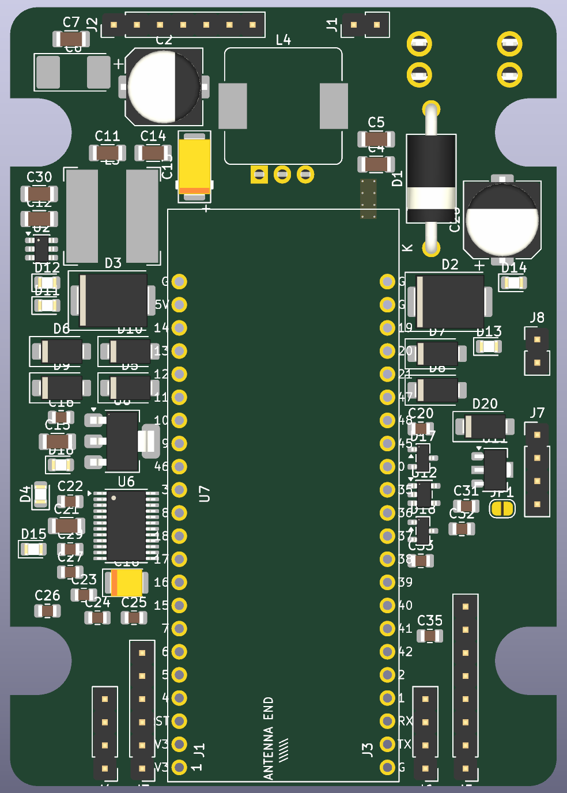
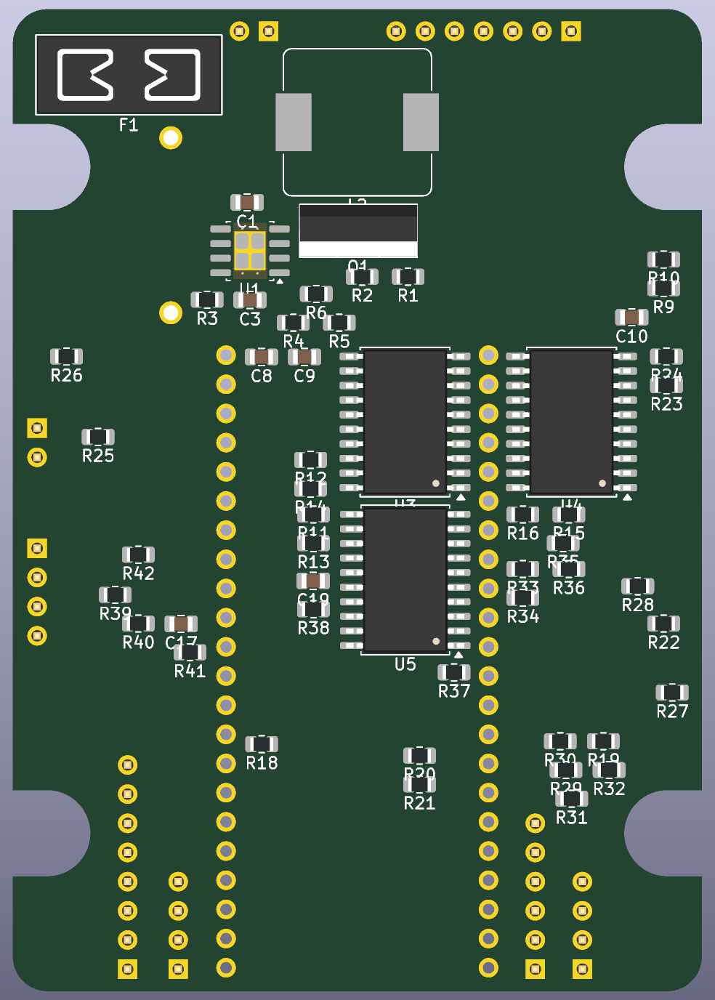

Расстановка варианта A (ESP32-S3) · только размещение, меди нет · DRC 0 нарушений · 290 ratsnest (норма до разводки)


| Проверка «всё влезает» | Значение |
|---|---|
| Полезная площадь (5130 − углы R3 − 4 паза) | 4944 мм² |
| Сумма тел всех 116 корпусов | 2867 мм² (58%) |
| Сумма дворов | 3457 мм² (70%) |
| Без модуля U7 (он над платой, под ним низкие детали) | тела 1262 мм² (25,5%) |
| Итог | влезает с запасом, ограничение — геометрия (модуль 63×26 вертикально, высокие детали вне его зоны) |
| DRC | Значение |
| Нарушений / замыканий / зазоров | 0 / 0 / 0 |
| Неподключённых (ratsnest) | 290 — ожидаемо, разводки нет |
| Соответствие схеме (parity) | 0 (H1..H4 удалены, поэтому 0, а не 4) |